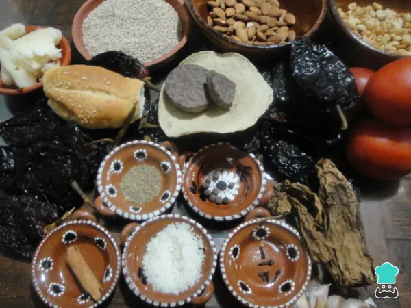
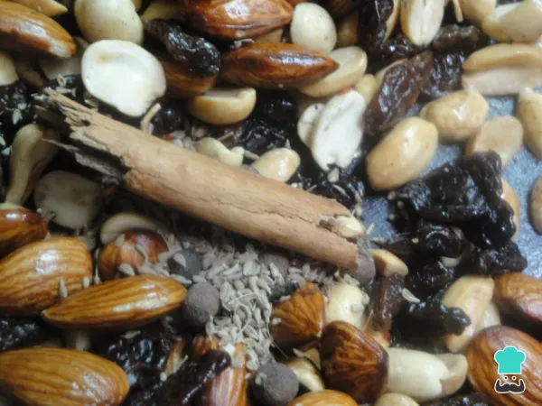
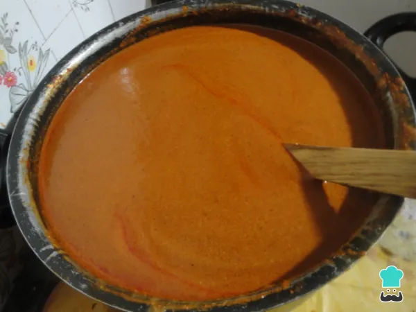
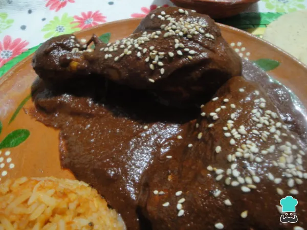

El mole poblano es una especialidad culinaria originaria de la ciudad de Puebla, originalmente se basaba principalmente en una salsa con gran variedad de ingredientes servido sobre piezas de pavo, mejor conocido en México como guajolote, sin embargo actualmente es común utilizar piezas de pollo o de otros animales.
Ingredientes
Procedimiento
Ingredientes
- 1 pollo entero cortado en piezas
- 225 gramos de chile mulato
- 200 gramos de chile ancho
- 115 gramos de chile pasilla
- 85 gramos de ajonjolí
- 85 gramos de cacahuate
- 1 pieza de bolillo duro
- 200 gramos de manteca
- 1 pastilla de chocolate
- 2 chiles chipotle
- 500 gramos de jitomate
- 250 gramos de cebolla
- 6 dientes de ajo
- 1 tortilla dura de maíz
- 1 cucharadita de anís
- 5 piezas de clavos de olor
- 8 piezas de pimientas gordas
- 1 rama de canela
- 4 litros de caldo de pollo
- 1 pizca de sal al gusto
- 85 gramos de almendras
- 1 puñado de pasas

Procedimiento
- Juntar los ingredientes necesarios es el primer paso para poder preparar el pollo con mole poblano.
- El pollo lo lavamos, le quitamos la piel y lo ponemos hervir con agua hasta cubrirlo por completo. Ponemos un trozo de cebolla, 2 dientes de ajos y sal al gusto para que la carne adquiera un toque de sabor. Aparte, lavamos los chiles y los dejamos que se escurran.
- A los chiles se les quita el rabito y se desvenan para poder continuar con la preparación del mole de chocolate.
- Ponemos una sartén en la estufa a fuego mediano. Colocamos un cucharada de manteca y empezamos a freír ligeramente los chiles. Una vez fritos los dejamos en remojo con un poco del caldo que quedó de la cocción del pollo.
- En otra sartén tostamos el ajonjolí, tal y como se observa en la fotografía.
- Freímos con manteca las almendras, los cacahuates y las pasas para continuar con la salsa mole.
- También agregamos la pimienta, la canela, el anís y los clavos de olor.
- Aparte, asamos el jitomate cortado en cuartos, la cebolla y los ajos.
- Lo siguiente es moler los chiles e ir agregándoles los ingredientes fritos y asados para preparar el mole mexicano. Colamos la salsa y los residuos los regresamos a la licuadora para continuar moliéndolos.
- Continuamos moliendo los chiles y agregamos el pan y la tortilla de maíz. Para facilitar el molido agregamos caldo del pollo que hervimos al principio de la receta mexicana.
- Una vez molido todo, lo ponemos a la estufa a fuego medio. Es importante estar moviendo la salsa de mole poblano para evitar que se pegue en el fondo del cazo. Continuamos la cocción aproximadamente durante 40 minutos. En este tiempo, vamos a notar que el mole cambia de color, se va oscureciendo.
- Cuando empiece a hervir agregamos el chocolate y la sal al gusto. Continuamos hirviendo el mole con chocolate por 20 minutos más y añadimos el pollo cocido.
- Servimos el mole poblano con pollo y lo acompañamos con arroz rojo, frijoles puercos y tortillas calentitas.



